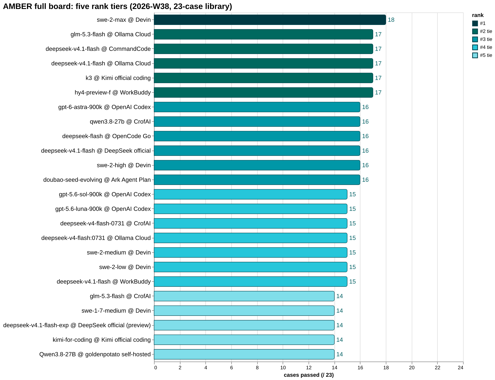
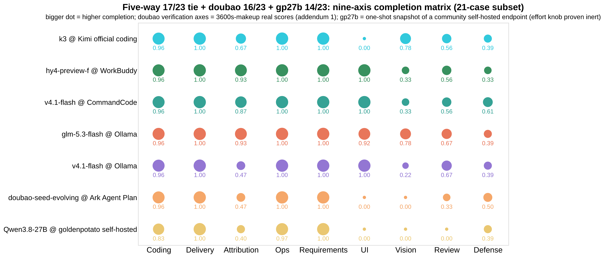
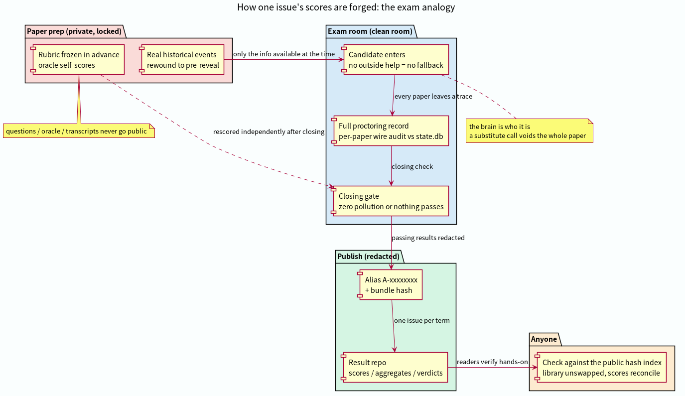
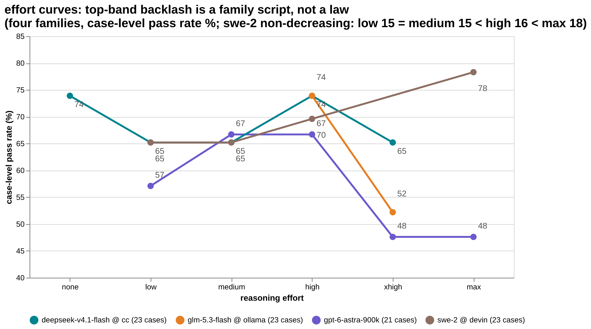
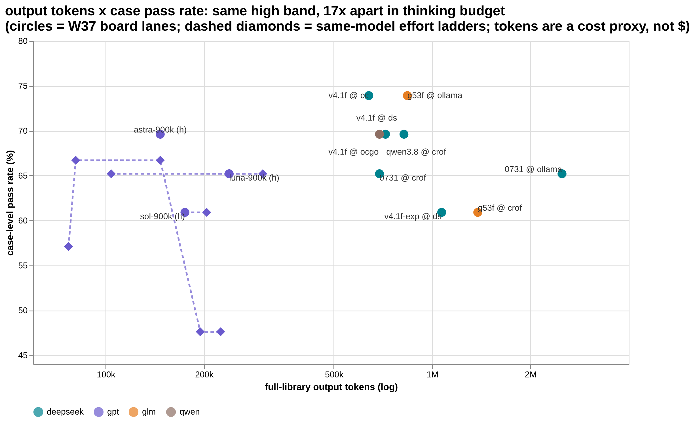
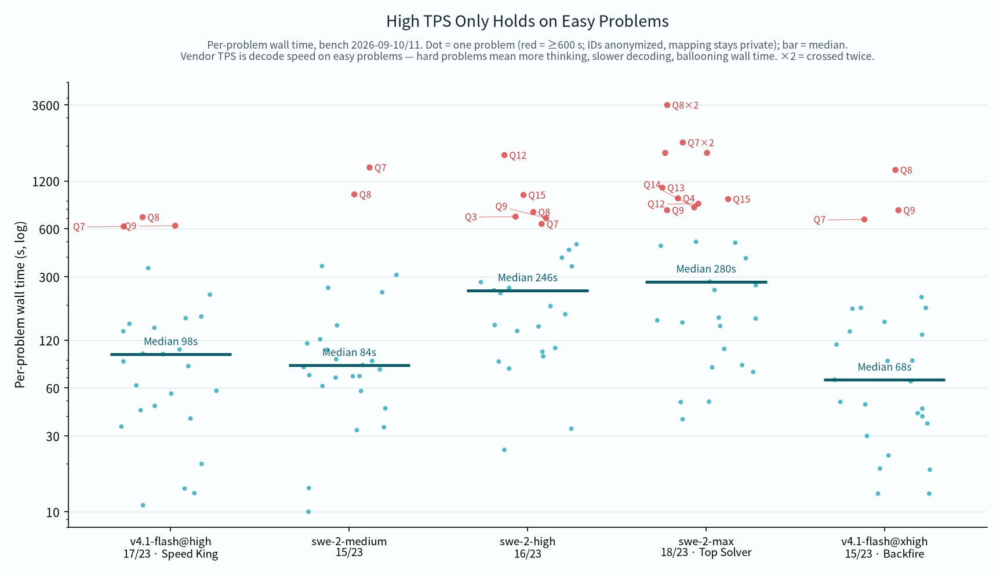

We take real, auditable incidents and freeze them at the moment before the answer was revealed. Models must redo the work with only what was knowable then, against a rubric frozen before any output existed. The cases are never published. The scores always are.
Same band (high), same 23 cases, same public hash index. Five rank tiers; ties are labeled as ties. Click the chart for details. Glossary: case = one task (from a real incident); paper = one sitting; band = reasoning-effort level.

The nine-axis completion matrix: each cell is a face's pin-level completion. Tied totals hide completely different profiles — the matrix shows what the sum can't.

Every weekly issue runs like an exam: cases sealed in advance, a clean-room sitting, per-paper wire audits, anonymized publication, and a public index anyone can re-check.

Each comes with named boundaries and counterexamples in the original writeups.



One repo per lane (model × endpoint × band), one matrix per week, wire audits and hash cross-checks included.
Method spec + public hash index + cross-repo weekly board
amber-devin18/23swe-2-max @ Devin — current leader
amber-kimi17/23k3 @ Kimi official coding endpoint + the K2.8 duel
amber-ollama17/23glm-5.3-flash / d41f @ Ollama Cloud
amber-commandcode17/23d41f @ CommandCode — five-band ladder
amber-workbuddy17/23hy4-preview-f @ WorkBuddy ACP
amber-gpt16/23gpt-6-astra / gpt-5.6 family @ OpenAI Codex
amber-crof16/23qwen3.8-27b @ CrofAI — the $1.15 value king
amber-deepseek16/23deepseek-flash @ DeepSeek official
amber-opencode16/23deepseek-flash @ OpenCode Go
amber-doubao16/23doubao-seed-evolving @ Volcengine Ark Agent Plan
amber-goldenpotato14/23Qwen3.8-27B @ community self-hosted (3× V100)
Read the method: AMBER Core Specification · public hash index · roadmap